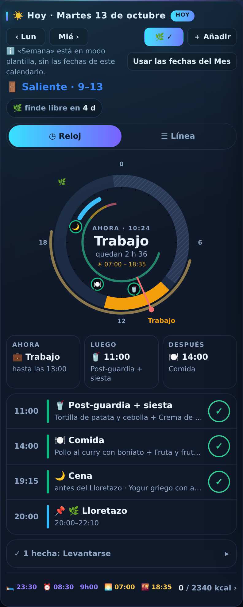
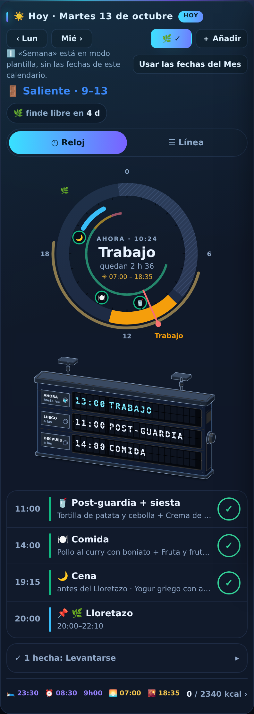

Las tres cajitas «Ahora · Luego · Después» se cambian por un panel de lamas, como los de las estaciones. Lee lo mismo, de la misma agenda: AHORA lo que haces y hasta qué hora (con el piloto encendido), LUEGO y DESPUÉS lo siguiente con su hora. Cuando empieza otra cosa, las lamas giran y todo sube una fila. Todo lo demás de la pantalla queda igual.
Antes

Tarjeta del día: 988 px. Las tres cajitas: 87 px.
Después

Tarjeta del día: 1 110 px (+122). El panel: 207 px.
El panel, vivo (pasa el dedo para mover la hora)